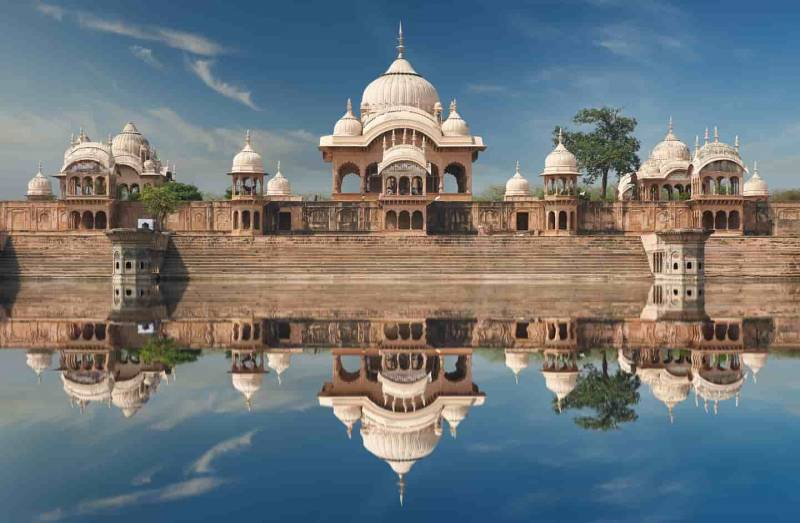
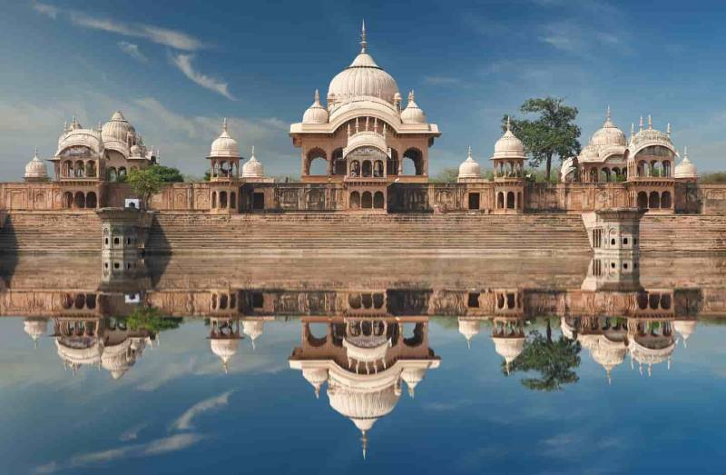

Introduction
The holy town of Vrindavan, near Mathura is an important pilgrimage hub in Braj region that attracts an
estimated 5,00,000 pilgrims every year. This is the place where Lord Krishna is believed to have spent his
childhood. The name of Vrindavan comes from words 'vrinda', which means basil, and 'van' meaning forest. In
this particular instance, the forest being referred to is believed to be either Nidhivan or Seva Kunj. Here,
devotees are seen smearing dust on their forehead as it is considered to be sacred. There is a veritable
treasure trove of beautiful temples dedicated to Lord Krishna in Vrindavan, the likes of which include Banke
Bihari, ISKCON, Gopeshwar Mahadev, Shahji, and Govinddeo among others.
History of Vrindavan
Vrindavan has an ancient past, associated with Hindu culture and history, and was established in the 16th and
17th centuries as a result of an explicit treaty between Muslims and Hindu Emperors,[24] and is an important
Hindu pilgrimage site since long.
In contemporary times, Vallabha Charya, aged eleven visited Vrindavan. Later on, he performed three pilgrimages
of India, barefoot giving discourses on Bhagavad Gita at 84 places. These 84 places are known as Pushtimarg
Baithak and since then have the places of pilgrimage. Yet, he stayed in Vrindavan for four months each year.
Vrindavan thus heavily influenced his formation of Pushtimarg.Banke Bihari Temple, vrindavan
The essence of Vrindavan was lost over time until the 16th century when it was rediscovered by Chaitanya
Mahaprabhu. In the year 1515, Chaitanya Mahaprabhu visited Vrindavan, with the purpose of locating the lost holy
places associated with Krishna's life.[25]In the last 250 years, the extensive forests of Vrindavan have been
subjected to urbanisation, first by local
Rajas and in recent decades by apartment developers. The forest cover has been whittled away to only a few
remaining spots, and the local wildlife, including peacocks, cows, monkeys and a variety of bird species has
been virtually eliminated.
Attractions
Discover the enchanting temples, ghats, and gardens that make Vrindavan a divine destination.

Sri Rangnath Ji
Nidhivan

Cheer Ghat
Barsana
Places to Visit in Vrindavan

Festivals and Celebrations
Experience the vibrant celebrations of festivals like Holi, Janmashtami, and Radha Ashtami in Vrindavan.
Holi in Vrindavan
The festivals of Vrindavan are unique, colorful events almost always involving ‘Raas’ or singing and dancing, the throwing of colors and eating several sweetmeats. The grandest festival, however, is the Holi festival or the festival of colors that virtually provokes everybody to lose all inhibitions and immerse themselves in the multifarious presence of the Lord. The significance of Holi is such that in some temples colored water is sprayed continuously all the year around and that too with a fervor matched with the devout passion of the devotees. One of the best places to see the enact of ‘gokul’s’ holi celebration is at the Gulal Kund of Braj. Here the young boys and girls form into troupes and dance the ‘Raas’ throughout the day and night regaling the audiences with the episodes from the life of the young Krishna depicting him as a mischievous and naughty yet very friendly and loving person.
Sharad Purnima
Sharad Purnima is celebrated on the night of full moon (Purnima) of Ashvina. According to Shri Mad-Bhagwat, Lord Krishna organized ‘Maharasa’ to fulfill desire of Gopis. After this Lila (incident) he was named as ‘Ras Rachaiya’. Sahard Purnima is one of the main Utsav of Bankey Bihari Temple. In Bankey Bihari Temple, It is celebrated with full energy. Devotees come from various parts of India to get the Darshan of Shri Bihari ji. In evening time, Shri Bihariji is dressed up His full ‘maharasa Shringar’ in moon-light coloured outfit. Only this day, Bankey Bihari ji Gives ‘Darshan’ as a flute player. Bihariji comes closer to His devotees. For a little bit time, Thakurji is presented in the shower of moon-light. after ‘Shayan Aarti’ the ‘Mukut Shringar’ of Bihari ji is showed for the visitors.
Janmashtami in Vrindavan
The birth of Lord Krishna or his Janmashtami is celebrated with the greatest fanfare and aplomb in Vrindavan. A number of rituals are associated with his birth and are enacted through ‘Raas Lila’ at various sites. People dress up their children as little ‘Gopals’ and seek the blessings of the Lord. In almost all the temples the decoration and the festivities are planned several days in advance. The silver, brass and ornate cradles are hung in the foreground of the worshipping areas in preparation of the coming of the Lord.In Mathura and Mathura celebrations begin 10 days before the Janmashtami. Various religious programs like Rasleelas, Bhajans, and Kirtans are performed by devotees. Rasleela is one of those rituals that is followed every day during dawn and dusk.
Radha Ashtami in Vrindavan
Radha Ashtami, also known as Radhashtami or Radha Jayanti, is considered one of the most important and auspicious festivals of the Hindus. The festival is celebrated to honour and commemorate the birth of Radha, the divine consort of Lord Krishna. On this special day, the devotees worship Radharani with a great deal of enthusiasm and devotion. The day is also a celebration of the selfless and admirable bond of love between Radha and Krishna and their holy union. It typically falls on the eighth day (Ashtami) of the bright half of the moon month of Bhadrapada, which usually occurs in August or September in the Gregorian calendar. Keep on reading to know more about this auspicious occasion.

Govardhan Puja Vrindavan
Another one of these are Govardhan Puja, when he had lifted the massive Govardhan Parwat or mountain on his little finger and protected the entire clans and animals of Gokul under its protective umbrella from the rabid onslaught of the stormy weather. When the elders of Krishna’s village under his persuasion begin worshipping the ‘Goverdhan parvat’ rather than Indra for rains, Krishna himself attained a huge form as the ‘Giriraj’ and accepted all their offerings. This festival is also called Annakoot. When he learned about this, Indra became furious and unleashed a torrential downpour upon Vrindavan. To protect the residents, Lord Krishna lifted the entire Govardhan Hill on his little finger, providing a shelter for the people and animals.
Gallery
 

Contact
Contact
For inquiries and further information, please contact us:
Email: info@badrinathtemple.com
Phone: +91-XXXXXXXXXX